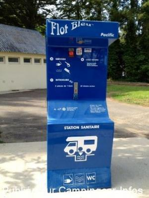
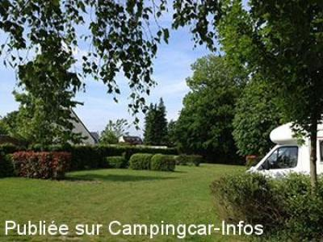
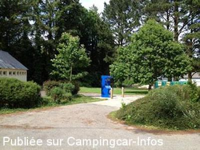
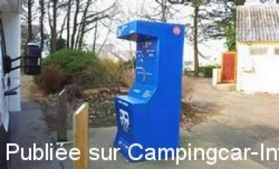
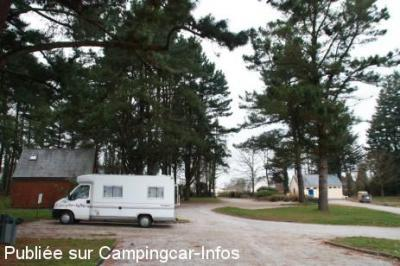
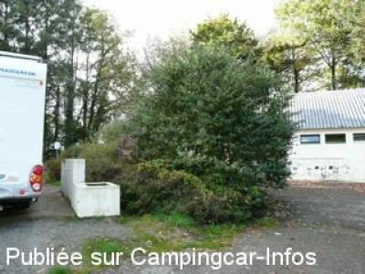

ASN = Aire de services avec stationnement nuit possible de :
ELVEN
(N° 182)
Accès/adresse :
Avenue des Martyrs de la Résistance
Camping municipal Le Guého **
56250 ELVEN
Camping municipal Le Guého **
56250 ELVEN
Latitude : (Nord) 47.73835° Décimaux ou 47° 44′ 18′′
Longitude : (Ouest) -2.58074° Décimaux ou -2° 34′ 50′′
Tarif : 2014
Eau, vidanges : 1 €
Électricité : 2 € / 4 H
Type de borne : FLOT BLEU
Services :


Tous commerces
Autres informations :
Ouvert toute l'année
12 emplacements
Tel +33 (0)297 533 113

Le 10/06/2013 par SBH

Le 10/06/2013 par SBH

Le 10/06/2013 par SBH

Le 15/03/2012 par philr-Elven-28022012

Le 12/02/2011 par abal28

Le 05/11/2008 par PhilR-Bloc Sanitaires au fond
de
marco
le 25/11/2015 :
De passage le 8 juin 2015 , aucun autre commentaire tout est dit;
merci à la commune pour cette Aire,vraiment super .
De passage le 8 juin 2015 , aucun autre commentaire tout est dit;
merci à la commune pour cette Aire,vraiment super .
de
ermagat
le 26/10/2015 :
De passage le 18/10/15, un endroit très agréable mais la borne est hors service
De passage le 18/10/15, un endroit très agréable mais la borne est hors service
de
agnès
le 07/08/2014 :
testé aout 2014, vraiment génial aire gratuite pour dormir avec des espaces délimités, nous avons même demander aux autres camping caristes si elle était vraiment gratuite tellement c est bien sommes restés 2 nuits Merci à la commune d Elven Amis camping caristes s il vous plait si vous y aller respecter les lieux ne laisser pas traîner d ordures il y a tout ce qu il faut pour les jeter avec tri, ramasser les crottes de vos chiens ce que nous avons fait, et surtout laisser les sanitaires comme si vous étiez chez vous (enfin, si vous avez un intérieur bien propre)
testé aout 2014, vraiment génial aire gratuite pour dormir avec des espaces délimités, nous avons même demander aux autres camping caristes si elle était vraiment gratuite tellement c est bien sommes restés 2 nuits Merci à la commune d Elven Amis camping caristes s il vous plait si vous y aller respecter les lieux ne laisser pas traîner d ordures il y a tout ce qu il faut pour les jeter avec tri, ramasser les crottes de vos chiens ce que nous avons fait, et surtout laisser les sanitaires comme si vous étiez chez vous (enfin, si vous avez un intérieur bien propre)
de
philr
le 28/02/2012 :
Passage 28/02/2012. Beaucoup de changement et de travaux depuis notre dernier arret. Borne Flots Bleues : 1€/10min E.P., vidanger k7 WC (principe de cette borne...) Pas ruineux. Sur local sanitaire, Flots Bleues EdF : 2€/4H, 4€/8H... A priori, il faut aller sur le terrain derriere le bloc sanitaire pour la nuit (il y a aussi des caravanes d ouvriers). Cadre toujours aussi agreable.
Passage 28/02/2012. Beaucoup de changement et de travaux depuis notre dernier arret. Borne Flots Bleues : 1€/10min E.P., vidanger k7 WC (principe de cette borne...) Pas ruineux. Sur local sanitaire, Flots Bleues EdF : 2€/4H, 4€/8H... A priori, il faut aller sur le terrain derriere le bloc sanitaire pour la nuit (il y a aussi des caravanes d ouvriers). Cadre toujours aussi agreable.
de
Fredo
le 21/08/2010 :
Chaque emplacemant est délimité par une haie et gazonné, superbement, entretenu. Sanitaires propres. Endroit calme. Encore merci à cette commune, exemple à suivre.
Chaque emplacemant est délimité par une haie et gazonné, superbement, entretenu. Sanitaires propres. Endroit calme. Encore merci à cette commune, exemple à suivre.
de
Gagcbr
le 19/06/2009 :
Aire très calme à l'entrée du charmant village et reliée au centre ville par une piste cyclable. Borne Flot Bleu toute neuve : 2 pièces de 1€ avec pistolet à eau, vidange WC et eaux usées, électricité pendant 20 minutes. §
Aire très calme à l'entrée du charmant village et reliée au centre ville par une piste cyclable. Borne Flot Bleu toute neuve : 2 pièces de 1€ avec pistolet à eau, vidange WC et eaux usées, électricité pendant 20 minutes. §
de
PhilR
le 05/11/2008 :
Passage vacances Toussaint 2008. Toujours aussi belle et pratique; mais ils ont du avoir un "petit" problème de gel (travaux en cours). Cependant, un des trois robinet fonctionnait; comme le bloc sanitaires.
Encore de grands MERCIS à cette charmante commune.
Passage vacances Toussaint 2008. Toujours aussi belle et pratique; mais ils ont du avoir un "petit" problème de gel (travaux en cours). Cependant, un des trois robinet fonctionnait; comme le bloc sanitaires.
Encore de grands MERCIS à cette charmante commune.
de
PhilR
le 21/03/2007 :
Aire refaite à neuf...depuis la prise des photos.
Accés très facile, aire très pratique, vers l'Est village.
Aire : dalle béton +/- 8x3 m (notre C-C = 7,15x2,30 m) avec grille au centre pour E.U.; bordée d'un muret côté sanitaires (bâtit blanc sur photo) avec robinet fileté pour E.P. et grand receveur pour les WC.
Pour le reste, voir photos : grands sapins, parties stabilisées ou sur le gazon, avec jeux pour enfants à côté du chalet.
Calme et belles nuits assurées.
Tarifs variables selon prestations et saison affichés sur le chalet.
Centre village (en travaux en juillet 2006) à 10 mn à pieds tranquille ! et Intermarché sortie Ouest (accès "Autoroute de Bretagne")
Merci et bravo à cette commune.
Aire refaite à neuf...depuis la prise des photos.
Accés très facile, aire très pratique, vers l'Est village.
Aire : dalle béton +/- 8x3 m (notre C-C = 7,15x2,30 m) avec grille au centre pour E.U.; bordée d'un muret côté sanitaires (bâtit blanc sur photo) avec robinet fileté pour E.P. et grand receveur pour les WC.
Pour le reste, voir photos : grands sapins, parties stabilisées ou sur le gazon, avec jeux pour enfants à côté du chalet.
Calme et belles nuits assurées.
Tarifs variables selon prestations et saison affichés sur le chalet.
Centre village (en travaux en juillet 2006) à 10 mn à pieds tranquille ! et Intermarché sortie Ouest (accès "Autoroute de Bretagne")
Merci et bravo à cette commune.